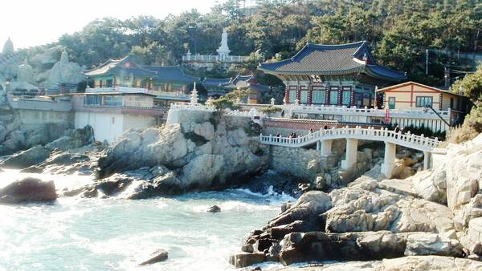
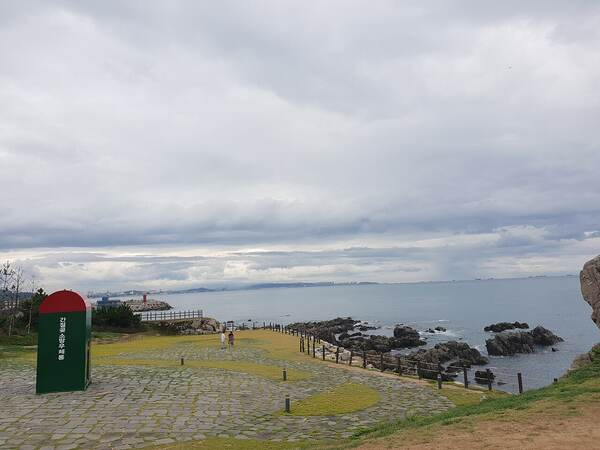
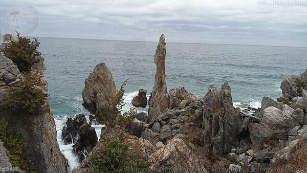
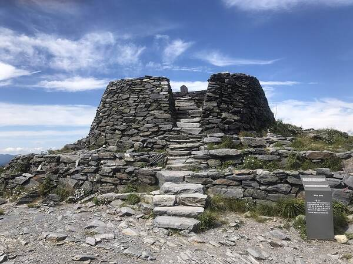
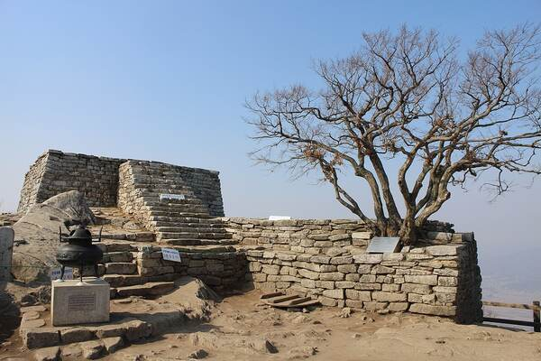
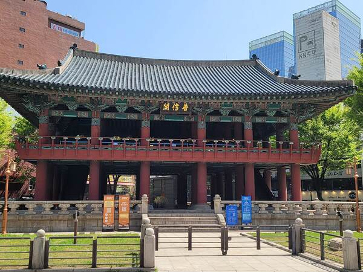
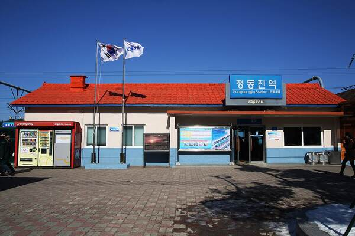
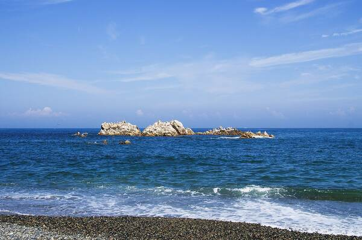
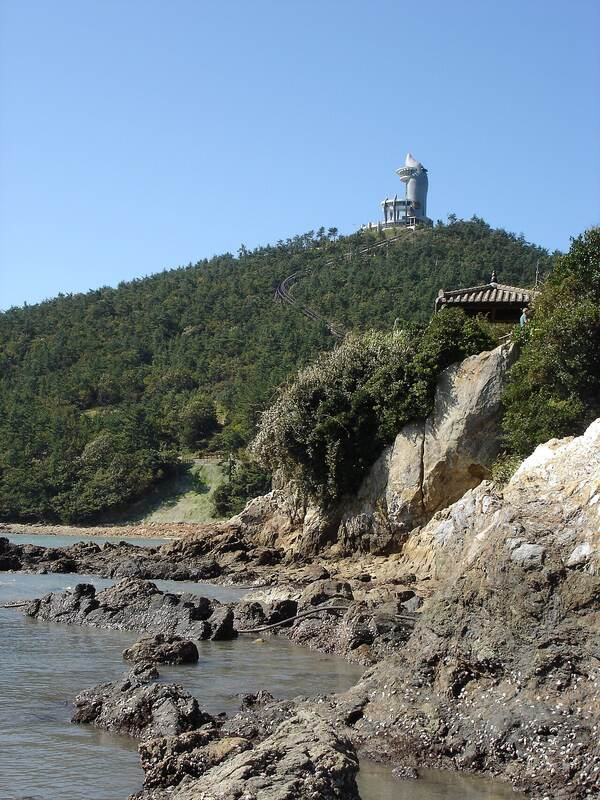
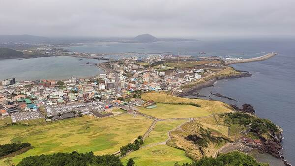

소원명당 › 소원 종류 › 새해·일출
새해 해맞이·소원 명소 19곳
새해 첫날 해를 보며 한 해를 비는 것은 오래된 풍습이에요. 이 쪽에는 바다나 산꼭대기에서 해돋이를 볼 수 있고, 새해 소원과 관련된 행사나 이야기가 있는 곳을 모았어요.
여수 향일암과 양양 홍련암, 남해 보리암은 바다 위로 해가 뜨는 관음 기도처예요. 울산 간절곶과 포항 호미곶, 강릉 정동진, 제주 성산일출봉은 해마다 해맞이 행사가 열리고, 당진 왜목마을은 서해에서 해돋이를 볼 수 있는 곳으로 알려져 있어요. 서울 보신각에서는 12월 31일 자정 제야의 종이 33번 울려요.
새해 아침에는 어디나 차가 막히고 주차가 어려워요. 해 뜨는 시각과 교통 통제는 해마다 지자체가 따로 알리니 꼭 확인하세요. 새벽 바닷가와 산은 매우 추워요.
참고용 안내예요. 방문 전에 공식 안내를 확인하세요. 전해지는 이야기를 소개할 뿐, 결과를 약속하지 않아요. 입장 시간·요금·주차·통제(산불·공사·기상)는 바뀔 수 있어요. 확인일 2026.11.15.
-
팔공산 갓바위
경북 경산시 · 바위·석불
사진: Barnkim, Public domain, 크기 줄임 · 위키미디어 커먼즈 정성껏 빌면 한 가지 소원은 들어준다고 알려진 돌부처. 수능 철이면 학부모가 많이 찾아요.
- 사실
- 팔공산 남쪽 봉우리 관봉 꼭대기에 있는 돌부처예요. 정식 이름은 「경산 팔공산 관봉 석조여래좌상」이고, 1965년 보물로 지정됐어요. 머리 위에 넓적한 돌이 갓처럼 얹혀 있어 갓바위라고 불러요. 이 판석은 불상보다 나중에 올린 것으로 봐요. 관리는 아래쪽 선본사가 맡아요.
- 전해지는 이야기
- 지극정성으로 빌면 한 가지 소원은 이뤄 준다는 이야기가 전해요. 그래서 입시철과 새해에 기도하러 오는 사람이 많아요.
- 가는 길
- 경산 선본사 쪽 또는 대구 동구 관암사 쪽에서 돌계단으로 올라가요. 계단이 길고 가팔라요. 무릎이 불편하면 천천히 쉬어 가세요. 입시철·새해 아침에는 사람이 매우 많아요.
- 예절
- 불상 앞 기도 자리는 오래 차지하지 마세요. 기도하는 사람 바로 앞에서 사진을 찍지 마세요.
출처: 국가유산청 국가유산포털, 한국민족문화대백과사전, 대한민국 구석구석, 경북매일 · 확인 2026.11.15 · 자세히 보기
-
남해 보리암
경남 남해군 · 암자강화 보문사·양양 홍련암과 함께 3대 관음 기도처로 꼽히는 바다 위 절벽 암자.
- 사실
- 남해 금산 꼭대기 가까이, 바다를 내려다보는 자리에 있는 암자예요. 관세음보살 기도처로 이름이 높아요. 강화 보문사, 양양 낙산사 홍련암과 함께 우리나라 3대 관음 기도처로 불려요. 금산 일대는 남해군이 꼽는 남해 제1경이에요.
- 전해지는 이야기
- 조선을 세우기 전 이성계가 이 산에서 기도했다는 이야기가 전해요. 그 뒤 1660년 현종이 이곳을 왕실 원당으로 삼고 산 이름을 금산, 절 이름을 보리암으로 바꿨다고 해요.
- 가는 길
- 금산 아래에서 위쪽 주차장까지 오른 뒤 산길을 걸어가요. 새해 첫날 아침은 매우 붐벼요. 주차·셔틀 운영은 남해군 안내를 확인하세요.
- 예절
- 법당 안에서는 사진을 찍지 마세요. 해수관음상 앞 자리는 차례로 써요.
출처: 한국민족문화대백과사전, 한국민족문화대백과사전, 남해군 관광, 대한민국 구석구석 · 확인 2026.11.15 · 자세히 보기
-
낙산사 홍련암
강원 양양군 · 암자
사진: Bernard Gagnon, CC0, 크기 줄임 · 위키미디어 커먼즈 의상대사가 붉은 연꽃 속 관음보살을 만났다는 바닷가 절벽 암자. 3대 관음 기도처 가운데 하나예요.
- 사실
- 낙산사 안 바닷가 절벽 위에 지은 작은 암자예요. 절벽의 굴 같은 지형 위에 있어 「관음굴」이라고도 불러요. 남해 보리암, 강화 보문사와 함께 3대 관음 기도처로 꼽혀요. 의상대와 홍련암 일대는 국가 명승이에요.
- 전해지는 이야기
- 의상대사가 이곳에서 기도하자 바다에서 붉은 연꽃이 솟고, 그 속에 관음보살이 나타났다는 이야기가 전해요. 「붉은 연꽃 암자」라는 이름이 여기서 왔어요.
- 가는 길
- 낙산사 경내로 들어가 의상대를 지나 바닷가 쪽으로 걸어가요. 새해 첫날 해돋이 때 매우 붐벼요. 관람 시간·입장료는 사찰 안내를 확인하세요.
- 예절
- 법당이 좁아요. 기도하는 사람이 있으면 차례를 기다리세요.
출처: 대한민국 구석구석, 한국민족문화대백과사전, 양양군 관광 · 확인 2026.11.15 · 자세히 보기
-
여수 향일암
전남 여수시 · 암자
사진: 날개, CC BY-SA 3.0, 크기 줄임 · 위키미디어 커먼즈 「해를 향한 암자」. 바위틈 일곱 곳을 모두 지나면 소원 하나가 이뤄진다는 이야기가 전해요.
- 사실
- 여수 돌산도 남쪽 끝 금오산 바위 절벽에 있는 암자예요. 남해 수평선 위로 해가 뜨는 모습이 좋아 「향일(向日)」이라는 이름이 붙었어요. 2022년 일대가 국가 명승으로 지정됐어요. 여수시는 해마다 연말연시에 향일암 일출제를 열어요.
- 전해지는 이야기
- 원효대사가 처음 세우고 이곳에서 관세음보살을 만났다는 이야기가 전해요. 경내 바위틈 일곱 곳을 모두 지나가면 소원 한 가지가 이뤄진다는 이야기도 있어요.
- 가는 길
- 아랫마을 주차장에서 계단길 또는 완만한 길로 올라가요. 바위틈이 좁아요. 큰 가방은 두고 가세요. 연말연시 일출제 때는 교통 통제가 있을 수 있어요.
- 예절
- 바위틈에서는 서로 비켜 주세요. 해돋이 때 법당 앞을 막고 서 있지 마세요.
출처: 여수시 관광, 여수시 관광, 한국민족문화대백과사전, 대한민국 구석구석 · 확인 2026.11.15 · 자세히 보기
-
부산 해동용궁사
부산 기장군 · 사찰
사진: Anna L Martin, CC BY 2.0, 크기 줄임 · 위키미디어 커먼즈 「진심으로 빌면 한 가지 소원은 이룬다」는 입소문이 난 바닷가 절. 득남불도 유명해요.
- 사실
- 부산 기장 바닷가 바위 위에 지은 절이에요. 대부분의 절이 산에 있는 것과 달리 파도가 치는 해안에 있어요. 대한민국 구석구석 안내에는 입장료가 없다고 적혀 있어요. 108계단을 내려가면 바다 바로 앞에 법당이 있어요.
- 전해지는 이야기
- 진심으로 기도하면 한 가지 소원은 이룬다는 입소문이 있어요. 아들을 바라는 사람이 배를 만지고 가는 「득남불」 이야기도 전해요.
- 가는 길
- 주차장이나 버스 정류장에서 걸어가요. 절 입구에서 108계단을 내려가요. 입장료 없음(대한민국 구석구석 안내 기준). 계단이 많아 유모차·휠체어는 어려워요.
- 예절
- 법당 안 촬영은 하지 마세요. 시주함이 아닌 곳에 동전을 던지지 마세요.
-
포항 호미곶 해맞이광장
경북 포항시 · 바다·곶한반도 동쪽 끝 곶. 해마다 12월 31일부터 새해 아침까지 해맞이 축전이 열려요.
- 사실
- 포항 호미곶은 한반도 지도를 호랑이로 볼 때 꼬리에 해당한다고 해서 붙은 이름이에요. 포항시는 해마다 12월 31일부터 1월 1일 아침까지 「호미곶 한민족 해맞이축전」을 열어요. 바다와 육지에 손 모양 조형물이 서 있고, 그 사이로 해가 뜨는 모습이 이름나 있어요.
- 전해지는 이야기
- 소원 전설이 전하는 곳은 아니에요. 새해 첫 해를 보며 한 해의 바람을 비는 해맞이 명소로 소개해요.
- 가는 길
- 포항 시내에서 해안 도로를 따라 호미곶면으로 가요. 새해 아침에는 교통 통제와 혼잡이 심해요. 축전 일정은 포항시 관광 누리집에 나와요.
- 예절
- 새벽 인파 속에서는 뛰지 말고, 쓰레기는 꼭 가져가세요.
-
울산 간절곶
울산 울주군 · 바다·곶
사진: Choi2451, CC BY-SA 4.0, 크기 줄임 · 위키미디어 커먼즈 육지에서 새해 해가 가장 먼저 뜨는 곳으로 알려진 곶. 커다란 소망우체통이 있어요.
- 사실
- 울산 바닷가로 툭 튀어나온 곶이에요. 육지에서 새해 첫 해가 가장 먼저 뜨는 곳 가운데 하나로 알려져 있어요. 높이 약 5m의 커다란 소망우체통이 있는데, 실제로 우편물을 거둬 배달하는 진짜 우체통이에요. 울주군은 해마다 연말연시에 해맞이 행사를 열어요.
- 전해지는 이야기
- 소원 전설이 전하는 곳은 아니에요. 새해 바람을 엽서에 적어 소망우체통에 넣는 풍습으로 이름이 났어요.
- 가는 길
- 울산 시내나 부산 기장에서 해안 도로를 따라 서생면으로 가요. 엽서는 근처 판매장에서 무료로 나눠 준다고 소개돼요. 새해 아침에는 교통 통제가 있어요.
- 예절
- 바위 끝이나 방파제 밖으로 나가지 마세요.
출처: 한국민족문화대백과사전, 대한민국 구석구석, 대한민국 구석구석 · 확인 2026.11.15
-
동해 추암 촛대바위
강원 동해시 · 바위·바다
사진: Dittwjfsdgkvkdjg, CC BY-SA 4.0, 크기 줄임 · 위키미디어 커먼즈 바위 끝에 해가 걸려 촛불처럼 보이는 해돋이 명소. 애국가 첫 장면으로 알려져 있어요.
- 사실
- 동해 추암해변 앞바다에 솟은 가늘고 긴 바위예요. 해가 바위 끝에 걸리면 촛불처럼 보여 촛대바위라 불러요. 애국가 첫 소절 배경 화면으로 알려져 있어요. 근처에 2019년 놓은 72m 길이의 출렁다리가 있어요.
- 전해지는 이야기
- 소원 전설이 전하는 곳은 아니에요. 새해 첫 해를 보며 바람을 비는 해맞이 명소로 소개해요.
- 가는 길
- 추암해변 주차장에서 해변 산책로를 따라 걸어가요. 여름에는 해가 일찍 떠요. 새해 아침에는 주차가 어려워요.
- 예절
- 출입 금지 바위 구역에 들어가지 마세요.
-
태백산 천제단
강원 태백시 · 제단·산
사진: 윤호철, CC BY-SA 3.0, 크기 줄임 · 위키미디어 커먼즈 하늘에 제사를 지내던 산꼭대기 돌 제단. 예부터 해맞이 명소로 꼽혀 왔어요.
- 사실
- 태백산 꼭대기에 돌을 쌓아 만든 제단이에요. 1991년 국가민속문화유산으로 지정됐어요. 해마다 10월 3일 개천절에 하늘에 제사를 지내는데, 이를 천제라고 해요. 국가유산청 자료는 옛 기록에 태백산이 신년 해맞이 명소였다고 전해요.
- 전해지는 이야기
- 옛날부터 나라와 마을의 평안을 빌며 하늘에 제사를 올려 온 곳이라고 전해요.
- 가는 길
- 유일사나 당골 탐방로로 태백산 정상까지 걸어 올라가요. 겨울 산행 장비(아이젠, 방한복)가 필요해요. 새해 해돋이 산행은 국립공원 안내를 먼저 확인하세요.
- 예절
- 제단 안으로 함부로 들어가거나 돌을 옮기지 마세요.
출처: 국가유산청 국가유산포털, 한국민족문화대백과사전, 국가유산청 월간 국가유산사랑 · 확인 2026.11.15
-
옥천 용암사
충북 옥천군 · 사찰·마애불운해 위로 해가 뜨는 산사. 마애불에 빌면 이뤄지지 않는 일이 없다는 이야기가 전해요.
- 사실
- 장령산 중턱에 있는 절이에요. 552년 의신이 세웠다고 전하며, 경내에 용처럼 생긴 바위가 있어 용암사라는 이름이 붙었어요. 절 위쪽 바위에 높이 약 3m의 마애여래입상이 새겨져 있고, 충북 유형문화유산이에요. 맑고 일교차가 큰 날 새벽에는 산 아래로 구름바다가 깔려 해돋이 사진 명소로 알려져 있어요.
- 전해지는 이야기
- 이 마애불은 영험이 있어 기도하면 이뤄지지 않음이 없다는 이야기가 전해요. 신라 마지막 왕자 마의태자를 그리워한 사람들이 새겼다는 이야기도 있어 절에서는 「마의태자상」이라고도 불러요.
- 가는 길
- 옥천 읍내에서 삼청리 쪽 산길로 올라가 주차한 뒤 걸어서 올라가요. 해돋이를 보려면 해 뜨기 1시간 전에는 도착하세요. 새벽 산길은 어둡고 미끄러워요. 구름바다는 날씨에 따라 없는 날이 더 많아요.
- 예절
- 해돋이를 찍으러 온 사람이 많아도 법당 앞에서는 소리를 낮추세요. 삼각대로 길을 막지 마세요.
출처: 한국민족문화대백과사전, 한국민족문화대백과사전, 위키트리 · 확인 2026.11.15
-
부산 해운대 해수욕장
부산 해운대구 · 바다·해변해마다 1월 1일 해맞이 축제가 열리는 부산의 대표 해돋이 해변.
- 사실
- 길이 약 1.5km의 백사장이 펼쳐진 해수욕장이에요. 신라 최치원이 동백섬 바위에 「해운대」 세 글자를 새긴 데서 이름이 왔다고 전해요. 지하철로 바로 갈 수 있어 새해 아침 해맞이 인파가 가장 많이 몰리는 곳 가운데 하나예요.
- 전해지는 이야기
- 새해 첫날 해운대구가 해맞이 축제를 열고, 사람들은 바다 위로 뜨는 첫 해를 보며 한 해 소원을 빌어요. 동백섬 쪽 바위에는 최치원이 이곳 경치에 반해 이름을 새겼다는 이야기가 전해요.
- 가는 길
- 부산 지하철 2호선 해운대역에서 걸어서 10분 안팎이에요. 1월 1일 새벽에는 주변 도로가 통제되고 지하철이 붐벼요. 해는 동백섬 반대쪽, 달맞이고개 방향 바다 위로 떠요.
- 예절
- 해변에 소원 풍등이나 폭죽을 날리지 마세요. 쓰레기는 가져가세요.
출처: 한국민족문화대백과사전, 한국민족문화대백과사전 · 확인 2026.11.15
-
울산 대왕암공원
울산 동구 · 바다·바위죽어서도 용이 되어 나라를 지키겠다는 신라 왕비의 이야기가 전하는 바닷가 바위.
- 사실
- 울산 동구 바닷가에 기암괴석과 송림이 이어진 공원이에요. 공원 끝 바위섬 대왕암까지 다리가 놓여 있어요. 해맞이 전망 광장이 있어 새해 아침 해돋이를 보러 오는 사람이 많아요.
- 전해지는 이야기
- 신라 문무대왕의 왕비가 죽어서도 용이 되어 나라를 지키겠다며 이 바위섬 아래 잠겼다는 이야기가 전해요. 그래서 「용추암」이라고도 불러요. 경주 문무대왕릉 이야기와 비슷하지만, 여기서는 주인공이 왕비라는 점이 달라요.
- 가는 길
- 울산 동구 대왕암공원 주차장에서 송림길을 따라 걸어서 15분 안팎이에요. 바위 위는 바람이 세요. 파도가 높은 날은 다리를 막기도 해요.
- 예절
- 바위에 낙서하거나 돌을 쌓지 마세요. 낙서 사건 뒤 바위 표면을 긁어내야 했던 일이 있어요.
-
강화 마니산 참성단
인천 강화군 · 제단·산
사진: Ssnm1015, CC BY-SA 4.0, 크기 줄임 · 위키미디어 커먼즈 단군이 하늘에 제사를 지냈다고 전하는 돌 제단. 고려·조선 때도 나라 제사를 올렸어요.
- 사실
- 마니산(472m) 꼭대기 가까이 돌을 쌓아 만든 제단으로, 1964년 사적으로 지정됐어요. 고려와 조선 때 나라에서 제사를 지낸 기록이 있어요. 지금도 해마다 10월 3일 개천절에 개천대제를 지내고, 전국체전 성화를 이곳에서 채화해요.
- 전해지는 이야기
- 단군이 제단을 쌓고 하늘에 제사를 지낸 곳이라는 이야기가 전해요. 그래서 새해 첫날 해맞이를 하며 한 해의 바람을 빌러 오르는 사람이 많아요. 제단 위에는 홀로 선 소사나무(천연기념물)가 있어요.
- 가는 길
- 마니산국민관광지 주차장에서 계단로(짧고 가파름) 또는 단군로(길고 완만함)로 올라가요. 편도 1시간 30분 안팎이에요. 입장료가 있어요. 제단 개방 여부는 강화군 안내를 확인하세요. 겨울에는 정상부 바위가 얼어요.
- 예절
- 제단 돌 틈에 동전이나 쪽지를 끼우지 마세요.
출처: 한국민족문화대백과사전, 한국민족문화대백과사전 · 확인 2026.11.15 · 자세히 보기
-
서울 보신각
서울 종로구 · 종각
사진: YellowTurtle9, CC BY-SA 4.0, 크기 줄임 · 위키미디어 커먼즈 해마다 12월 31일 자정, 제야의 종 33번이 울리는 곳.
- 사실
- 조선 시대 도성에 시간을 알리던 종루 자리예요. 「보신각」이라는 이름은 1895년 고종이 붙였어요. 1953년부터 해마다 제야의 종 타종 행사가 열리고, 서울시가 2016년 서울미래유산으로 지정했어요. 옛 종(보물)은 지금 국립중앙박물관에 있어요.
- 전해지는 이야기
- 한 해의 마지막 밤 종을 33번 치며 새해를 맞는데, 종소리에 맞춰 저마다 새해 소원을 빌어요. 옛날 도성 문을 열 때 33번 종을 치던 「파루」에서 비롯됐다고 소개돼요.
- 가는 길
- 지하철 1호선 종각역 4번 출구 바로 앞이에요. 12월 31일 밤에는 10만 명 안팎이 모이고 종로 일대 차량이 통제돼요. 밤 늦게 지하철 무정차 통과가 있을 수 있어요.
- 예절
- 인파 속에서는 멈춰 서서 사진을 오래 찍지 마세요. 안전 요원 안내를 따르세요.
출처: 한국민족문화대백과사전, 서울시 내 손안에 서울, 뉴시스 · 확인 2026.11.15
-
강릉 정동진
강원 강릉시 · 바다·해변
사진: Showtime2027, CC BY-SA 3.0, 크기 줄임 · 위키미디어 커먼즈 한양 경복궁의 정동쪽 바닷가. 해마다 1월 1일 해돋이 행사와 모래시계 회전 행사가 열려요.
- 사실
- 조선 시대 한양 경복궁에서 정동쪽에 있는 바닷가라는 뜻의 이름이에요. 바다와 가장 가까운 기차역으로 알려진 정동진역이 있어요. 마을 남쪽 해안단구는 천연기념물이에요. 1990년대 드라마 「모래시계」 촬영지로 이름이 알려졌어요.
- 전해지는 이야기
- 새해 첫날 모래시계공원에서 커다란 모래시계를 돌리는 행사와 해돋이 행사가 열리고, 사람들은 소나무와 철길 너머로 뜨는 해를 보며 소원을 빌어요. 서울에서 해돋이 시각에 맞춰 가는 열차가 다니기도 해요.
- 가는 길
- 강릉역에서 동해선 열차나 시내버스로 30분 안팎, 정동진역에서 내리면 바로 바다예요. 1월 1일 새벽에는 열차표와 숙소가 일찍 동나요. 정동진역 승강장은 입장권이 필요할 수 있어요.
- 예절
- 철길 안쪽으로 들어가 사진을 찍지 마세요.
출처: 한국민족문화대백과사전, 한국민족문화대백과사전 · 확인 2026.11.15
-
경주 문무대왕릉
경북 경주시 · 바다·바위
사진: vatar/편성재, CC BY-SA 3.0, 크기 줄임 · 위키미디어 커먼즈 죽어서 용이 되어 나라를 지키겠다던 문무왕의 바닷속 무덤으로 알려진 바위섬.
- 사실
- 봉길해변 앞바다 약 200m에 있는 바위섬으로, 신라 문무왕의 수중릉으로 알려져 사적으로 지정됐어요. 가까이에 감은사지와 이견대가 있어요. 새해 아침 바위섬 위로 뜨는 해를 보러 오는 사람이 많아요.
- 전해지는 이야기
- 문무왕이 죽은 뒤 동해의 호국룡이 되어 왜적을 막겠다며 바다에 장사 지내라고 유언했다는 이야기가 전해요. 아들 신문왕이 감은사를 짓고, 이견대에서 용이 된 아버지를 보았다고 해요. 그래서 나라와 집안의 무사안녕을 비는 곳으로 알려졌어요.
- 가는 길
- 경주 시내에서 감포 방면으로 가다 봉길해변 주차장에 세워요. 바위섬은 해변에서 바라봐요. 해변에 굿을 하는 사람이 있을 때가 있어요. 방해하지 말고 멀리서 보세요. 새해 아침에는 주차장이 일찍 차요.
- 예절
- 바위섬으로 배를 타고 들어가지 마세요. 사적이에요.
출처: 한국민족문화대백과사전, 한국민족문화대백과사전 · 확인 2026.11.15
-
해남 땅끝
전남 해남군 · 바다·곶
사진: Matt and Nayoung Wilson, CC BY 2.0, 크기 줄임 · 위키미디어 커먼즈 한반도 땅의 남쪽 끝. 해마다 해넘이·해맞이 축제가 열려요.
- 사실
- 한반도 육지의 가장 남쪽 끝에 해당하는 곶이에요. 『신증동국여지승람』도 우리나라 남쪽 기점을 이곳 해남으로 잡았어요. 땅끝탑과 전망대, 모노레일이 있고 보길도·노화도 가는 배가 이곳에서 떠나요.
- 전해지는 이야기
- 땅이 끝나고 바다가 시작하는 곳이라, 한 해를 마무리하고 새로 시작하는 마음을 다지는 곳으로 알려졌어요. 해마다 12월 31일과 1월 1일 해넘이·해맞이 행사가 열려요.
- 가는 길
- 해남 읍내에서 송지면 땅끝마을까지 차로 40분 안팎이에요. 마을에서 전망대까지 모노레일이나 산책로로 올라가요. 땅끝탑까지는 계단이 많아요.
- 예절
- 땅끝탑 주변 바위에 낙서하지 마세요.
출처: 한국민족문화대백과사전, 한국민족문화대백과사전 · 확인 2026.11.15
-
당진 왜목마을
충남 당진시 · 바다·해변서해인데도 바다 위로 해가 뜨는 곳. 해마다 해넘이·해돋이 축제가 열려요.
- 사실
- 서해 쪽으로 툭 튀어나온 지형이라 바다 위로 뜨는 해와 지는 해를 한 자리에서 볼 수 있다고 알려진 마을이에요. 해마다 12월 31일~1월 1일 해넘이·해돋이 축제가 열려요. 마을 뒤 석문산에 오르면 더 넓게 보여요.
- 전해지는 이야기
- 서해에서 해돋이를 볼 수 있는 드문 곳이라, 새해 첫날 희망 엽서를 쓰고 소원을 비는 행사가 열려요. 2024년 축제에는 해돋이에만 2만 명 넘게 모였다고 보도됐어요.
- 가는 길
- 당진 시내에서 석문면 방면으로 30분 안팎, 마을 공영주차장이 있어요. 겨울 해는 바다 건너 장고항 쪽에서 떠요. 축제 일정은 당진시 안내를 확인하세요.
- 예절
- 갯바위에 올라갈 때 물때를 확인하세요. 해변에 풍등을 날리지 마세요.
-
제주 성산일출봉
제주 서귀포시 · 오름·바다
사진: Bernard Gagnon, CC0, 크기 줄임 · 위키미디어 커먼즈 「성산에서 보는 해돋이」가 영주십경으로 꼽혀 온 곳. 새해 첫날 일출 축제가 열려요.
- 사실
- 약 5,000년 전 얕은 바다에서 솟은 수성 화산체로, 높이(비고)는 179m예요. 꼭대기에 지름 수백 m의 분화구가 있어요. 2000년 천연기념물, 2007년 유네스코 세계자연유산이 됐어요.
- 전해지는 이야기
- 「일출봉」이라는 이름은 제주의 아름다운 열 곳을 꼽은 영주십경 가운데 「성산출일(성산의 해돋이)」에서 왔어요. 그래서 해마다 12월 31일~1월 1일 성산일출축제가 열리고, 사람들은 정상에서 첫 해를 보며 소원을 빌어요.
- 가는 길
- 성산 매표소에서 정상까지 계단길로 20~30분이에요. 새해 첫날에는 새벽에 특별 개방하는 때가 있어요. 서귀포시 안내를 확인하세요. 바람이 매우 세요.
- 예절
- 정해진 탐방로 밖 풀밭에 들어가지 마세요.
출처: 한국민족문화대백과사전, 제주특별자치도 세계지질공원 · 확인 2026.11.15
지역별로 보기
지도 첫 화면에서는 소원 종류와 지역을 함께 고를 수 있어요. 새해·일출 전체 지도로 보기